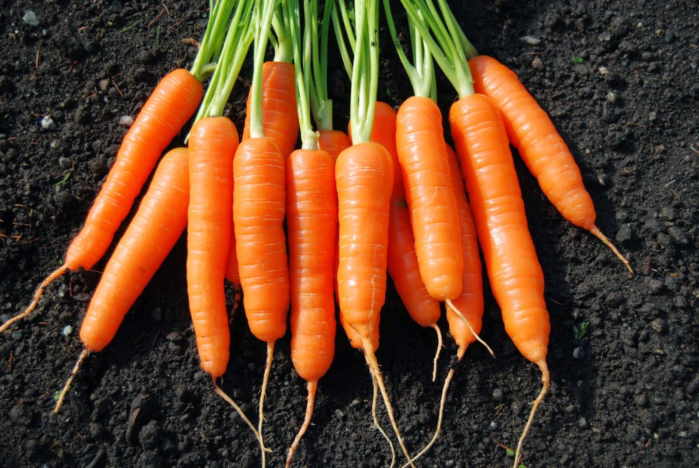

|
|---|
| Cabai Rawit |
| Cabai rawit, yang kaya akan capsaicin, dapat membantu meningkatkan metabolisme, meredakan nyeri, dan memberikan manfaat antioksidan yang baik untuk kesehatan. |
 |
|---|
| Kangkung |
| Kangkung, yang kaya akan serat, vitamin A, dan zat besi, dapat membantu menjaga kesehatan pencernaan, meningkatkan daya tahan tubuh, dan mencegah anemia. |
 |
|---|
| Kubis |
| Kubis, yang kaya akan vitamin C, K, dan serat, dapat membantu meningkatkan sistem kekebalan tubuh, mendukung kesehatan tulang, dan menjaga pencernaan yang sehat. |
| Paprika |
|---|
| Paprika, yang kaya akan vitamin C, A, dan antioksidan, dapat membantu meningkatkan sistem kekebalan tubuh, menjaga kesehatan mata, dan melindungi sel-sel dari kerusakan oksidatif. |
 |
|---|
| Sawi |
| Sawi, yang kaya akan vitamin K, C, dan serat, dapat membantu mendukung kesehatan tulang, meningkatkan sistem kekebalan tubuh, dan menjaga pencernaan yang sehat. |
|  |
|---|
| Wortel |
| Wortel, yang kaya akan beta-karoten, serat, dan vitamin A, dapat membantu menjaga kesehatan mata, meningkatkan sistem kekebalan tubuh, dan mendukung pencernaan yang sehat. |